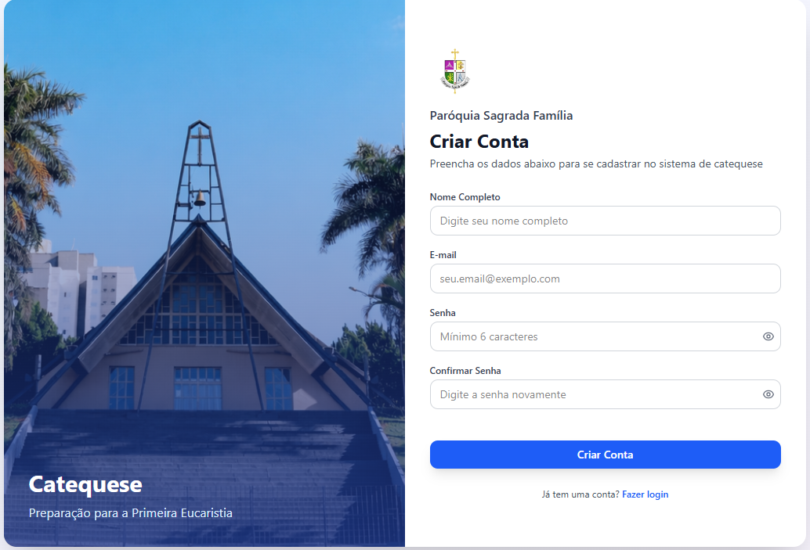
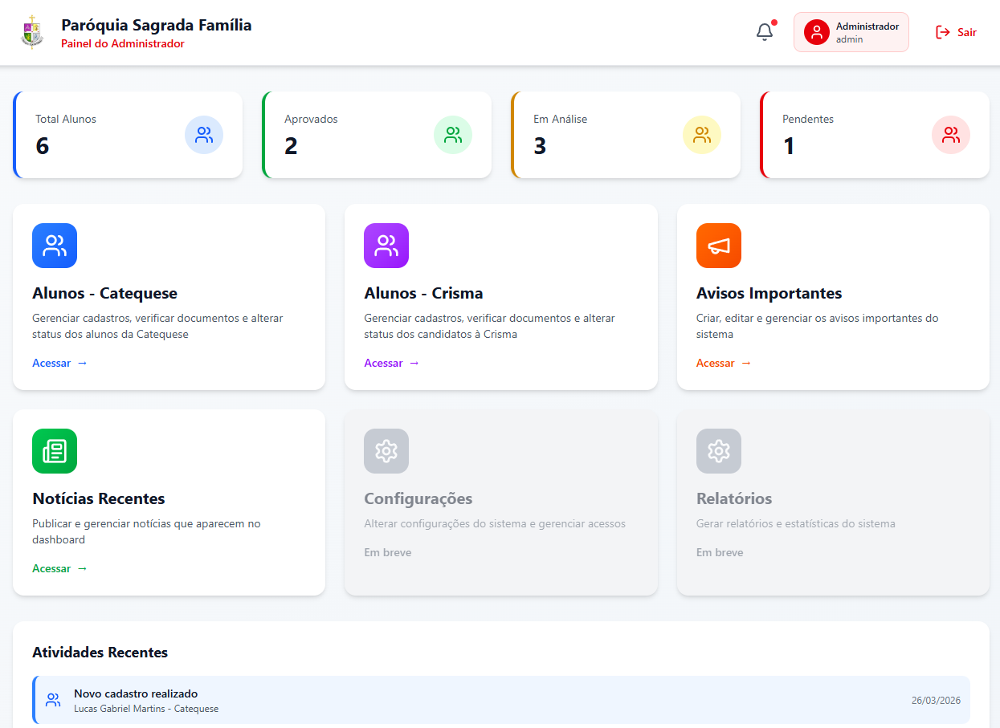
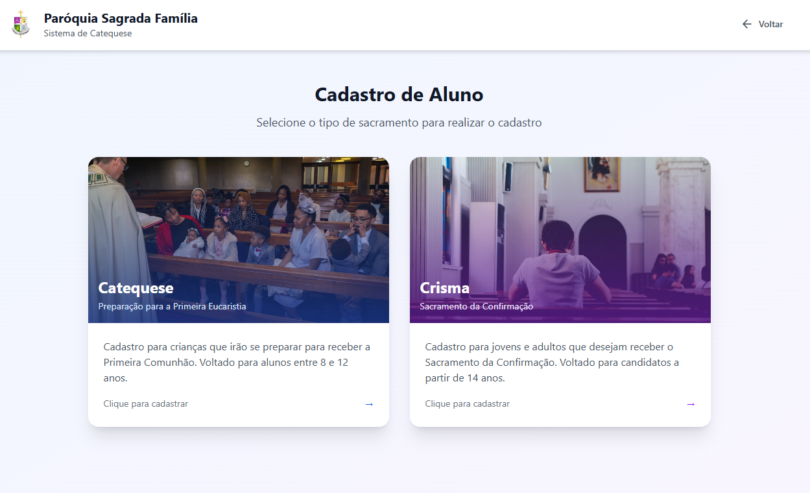

Projetos

● Em Desenvolvimento
CoByte - Plataforma Colaborativa
Automação e padronização do levantamento de requisitos de software.
HTMLCSSJSPythonFlaskMySQL




● Concluído
Sistema de Gestão de Catequese
Organização de turmas e gerenciamento de alunos.
HTMLCSSJSPythonFlaskMySQL


Programação Robótica Industrial
Simulação de robôs industriais utilizando Roboguide (FANUC).
LINKEDIN